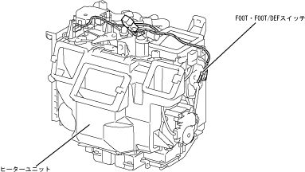

| FOOT/FOOT/DEF switch |
| ● |
As with the MAX HOT switch, Foot/Foot/DEF switches, which are used as one of the determining conditions of internal and external two -layer control, have been adopted as a cold district specification vehicle.
|
| ● |
The FOOT/FOOT/DEF switch is attached in contact with a link for mode door on the side of the heater unit, and the mode door is turned on when the Foot/Def mode position.
|
|  |